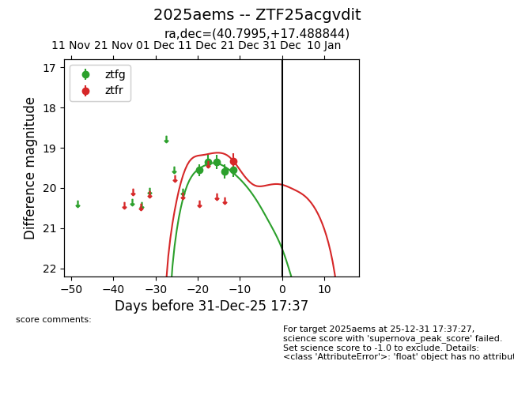
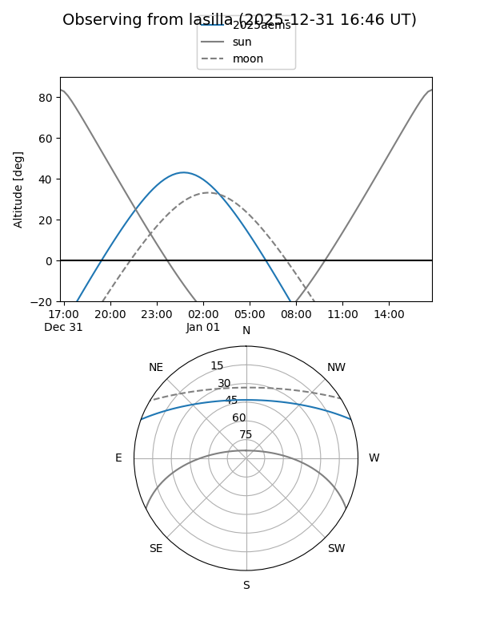
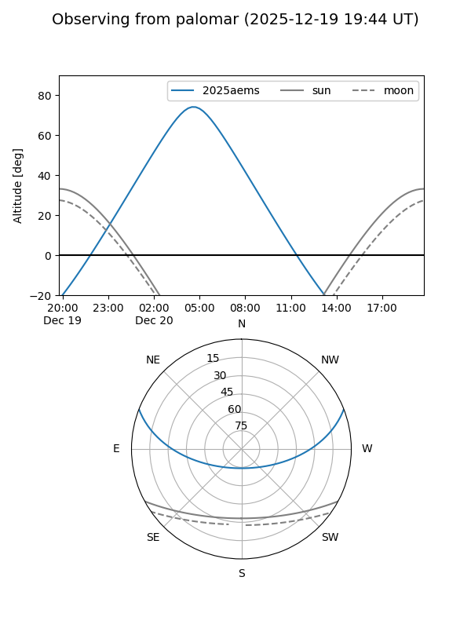
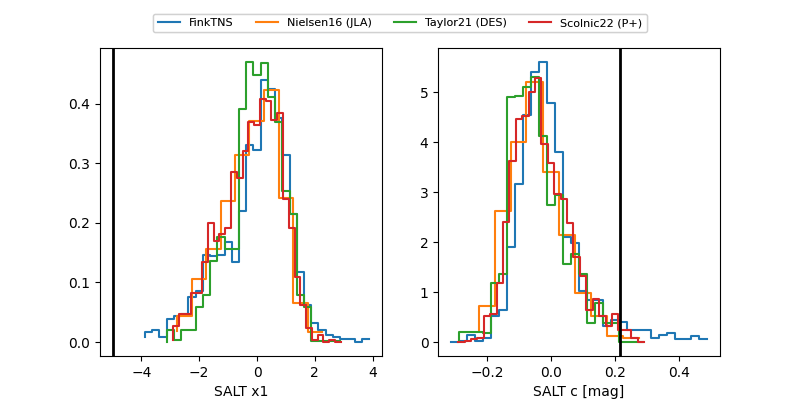

2025aems
Target 2025aems at 2025-12-31 17:00
Aliases and brokers:
FINK:
Lasair:
ALeRCE:
TNS:
YSE:
alt names
ZTF25acgvdit (ztf,fink_ztf)
2025aems (tns,yse)
Coordinates:
equatorial (ra, dec) = 40.7995,+17.48884
equatorial (HMS+DMS) = 02:43:11.87,+17:29:19.84
galactic (l, b) = (157.3725,-37.79758)
Flags:
Photometry:
last ztfg=19.56, ztfr=19.33
5 ztfg, 1 ztfr detections
Lightcurve

Visibility


Additional plots
